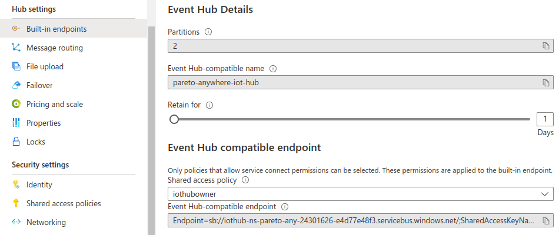

Run Pareto Anywhere for Azure
Our step-by-step guide to deploy and run Pareto Anywhere as a serverless function on Microsoft Azure.

The TL;DR (Too Long; Didn't Read)
Learn how to run reelyActive's Pareto Anywhere open source middleware efficiently as an Azure Function.
This will transform ambient wireless data from Azure IoT Hub into real-time context: who/what is where/how.
- What will this accomplish?
- Pareto Anywhere for Azure will run on-demand to process data from Azure IoT Hub into web-standard JSON to feed downstream Microsoft Azure services and APIs.
- Why an Azure Function?
- Running as a serverless function is highly efficient and scalable, and facilitates integration with complementary Microsoft Azure services.
- What ambient data?
- Currently supported sources include Bluetooth Low Energy and EnOcean Wireless Standard packets relayed via the Aruba Azure IoT Interface.
Prerequisites
Node.js as well as a Microsoft Azure account.
From a terminal run node --version to check if Node.js is already installed on your computer.
-

-
Download Node.js
Download and install the latest LTS version of Node.js.
If necessary, create a (free) Azure account. Confirm that you can successfully log into an active Azure account.
Installing locally Step 1 of X
Install Pareto Anywhere for Azure and its dependencies on your computer.
- Why a local install?
- The local install facilitates configuring and testing Pareto Anywhere for Azure before pushing the code to the cloud.
- Where's the source code?
- The code is maintained on GitHub by reelyActive.
Install pareto-anywhere-azure Part 1
Open a terminal and complete the following steps:
- Browse to the folder in which you wish to download the pareto-anywhere-azure source code.
- Clone the pareto-anywhere-azure repository with the command
git clone https://github.com/reelyactive/pareto-anywhere-azure.git(or download as ZIP and extract as pareto-anywhere-azure). - Browse to the pareto-anywhere-azure folder with the command
cd pareto-anywhere-azure - Install all dependencies with the command
npm install1 min
Create the local settings file Part 2
Create a new file named local.settings.json in the pareto-anywhere-azure folder with the following contents:
{
"IsEncrypted": false,
"Values": {
"FUNCTIONS_WORKER_RUNTIME": "node",
"AzureWebJobsStorage": "",
"EventHubConnectionString": "",
"EventHubSendAppSetting": "",
"WebPubSubConnectionString": "",
"iot_hub_name": "",
"event_hub_name": "",
"web_pub_sub_hub_name": ""
}
}
This file specifies the names and endpoints of the resource instances with which Pareto Anywhere for Azure will interface. The "Values" will be populated in the following steps of this tutorial.
Install the Azure dependencies Part 3
Install the Azure Functions Core Tools and the Azure CLI on your computer by following the official Microsoft tutorials:
- Install the Azure Functions Core Tools (v4.x or higher) and confirm the installation by running the command
func --versionand observing the installed version - How to install the Azure CLI. Confirm the installation by running the command
az --versionand observing the installed version
Creating an Azure IoT Hub Step 2 of X
If required, create a Resource Group and an IoT Hub on Azure.
- What's a resource group?
- A resource group is a container that holds related resources, typically with a shared lifecycle, for an Azure solution.
- What's IoT Hub?
- Azure IoT Hub is a cloud-hosted solution back end that facilitates the connection of virtually any device.
If connecting to an existing Azure IoT Hub, skip ahead to Part 3.
Aruba Networks users should instead follow the Aruba IoT Transport for Microsoft Azure Tech Note instructions to create an IoT Hub.
Create a Resource Group Part 1
From the home page of the Azure Portal, create a new Resource Group in your geographical region by following the 5 tabbed steps below:
Select Resource groups from the Azure services menu bar at the top of the portal.

Select + Create to create a new Resource group, unless an existing Resource group in the list already meets your geographical/logical requirements, in which case skip ahead to Part 2.
Enter a meaningful name for your resource group and select the geographical region best suited for your deployment. Then click Review + create at the bottom of the page.


Click Create at the bottom of the page after validating the resource details.
The resource group has been created.
From the resource group page it is possible to create resources by selecting + Create, which is the subject of Part 2 and additional steps below.
Create an IoT Hub Part 2
From the Resource group page in the Azure Portal, create a new IoT Hub by following the 5 tabbed steps below:
Select + Create from the menu bar on the Resource Group page.
From the Marketplace, search for and select IoT Hub.
Click Create to create an instance of this resource.
Enter a meaningful name for your IoT Hub and select the geographical region best suited for your deployment. Choose a tier and message limit adapted to the scale of your deployment. Then click Review + create at the bottom of the page.

Click Create at the bottom of the page after validating the resource details.
The IoT Hub has been created.
Continue to Part 3 below to retrieve the IoT Hub's endpoint from which Pareto Anywhere for Azure will receive messages.
Copy the IoT Hub endpoint Part 3
From the IoT Hub page of the Azure Portal, select Built-in endpoints from the menu on the left, and copy the contents of the Event Hub-compatible endpoint field.
Paste the endpoint contents into the local.settings.json file as the "EventHubConnectionString" value, as indicated below, and then save the file.
{
"Values": {
⋮
"EventHubConnectionString": "Endpoint=…",
⋮
}
}


Tutorial prepared with ♥ by jeffyactive.
You can reelyActive's open source efforts directly by contributing code & docs, collectively by sharing across your network, and commercially through our packages.Where to next?
Continue exploring our open architecture and all its applications.
-

-
Directory of Devices
Browse all device configuration tutorials and development guides.
-

-
reelyActive Developers
Browse all developer documentation and tutorials.
-

-
reelyActive
Let's put things in context, one space at a time.